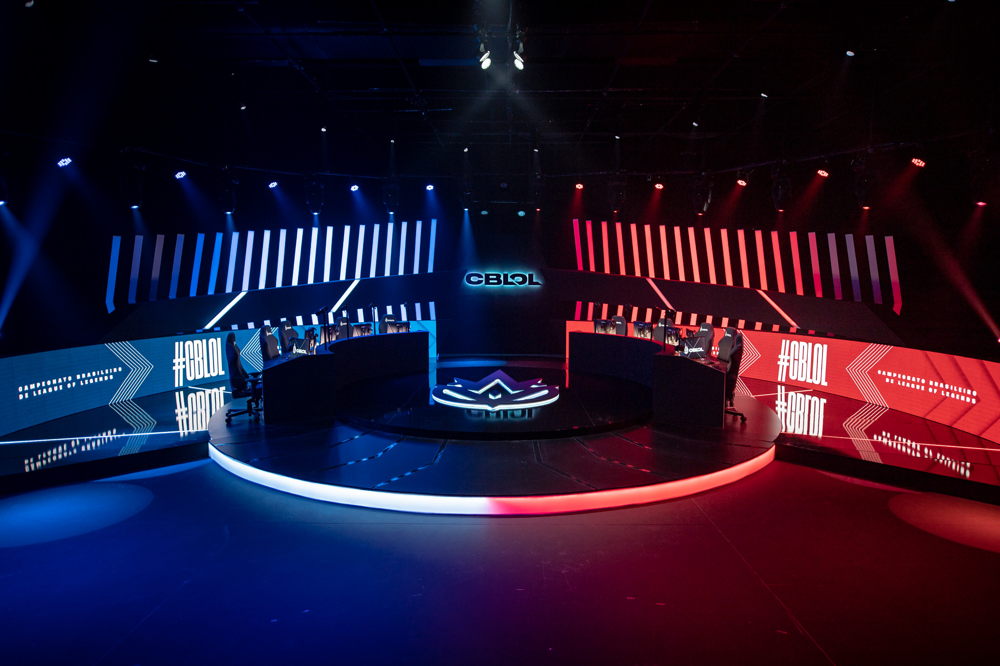
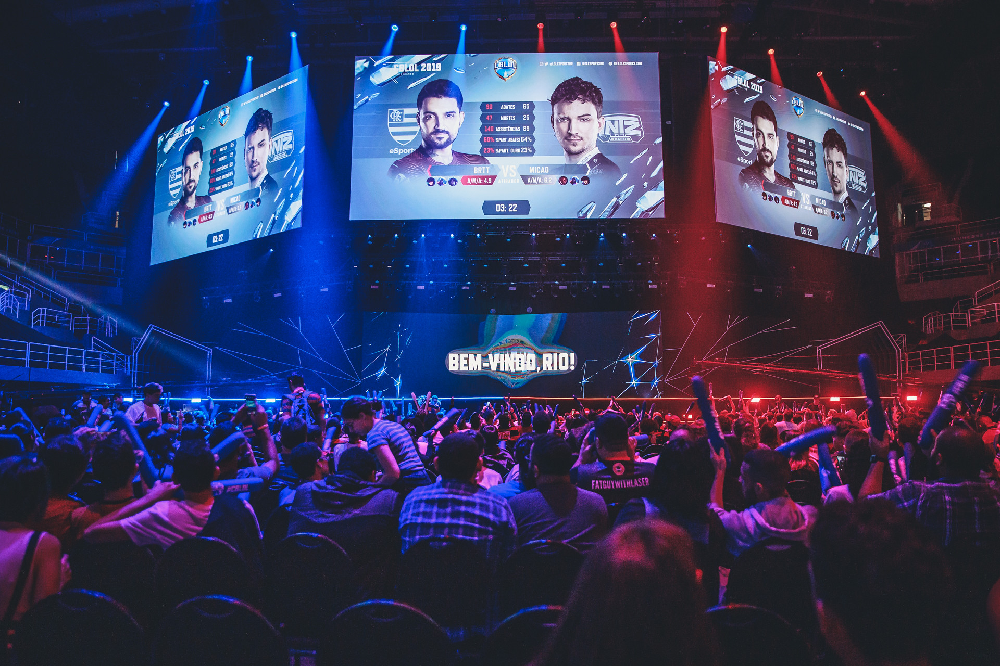
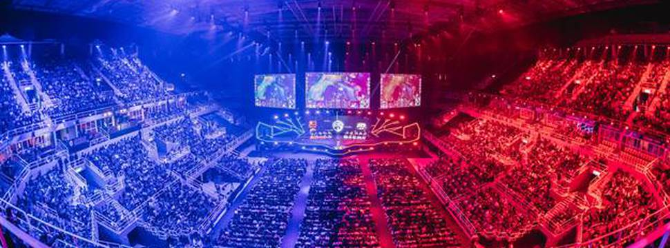

Flamengo eSports
Selecione em qual estádio deseja ver a partida:

Estádio do CBLOL
Localização: São Paulo, Brasil
Descrição: O Estádio do CBLOL é o principal palco das competições de League of Legends no Brasil. Com capacidade para mais de 10.000 espectadores, é famoso por suas estruturas modernas e palco imponente. O próximo jogo está marcado para 25 de julho de 2024.

Estádio Mundial
Localização: Localização variável anualmente
Descrição: O Estádio Mundial de League of Legends é o epicentro das finais do campeonato mundial anual do jogo. Rotacionando entre diferentes países a cada ano, o estádio é conhecido por sua escala global e atmosfera eletrizante.

Estádio MSI (Mid-Season Invitational)
Localização: Varia anualmente
Descrição: O Estádio do MSI é onde os melhores times regionais de League of Legends se enfrentam durante o Mid-Season Invitational, um evento que ocorre entre as temporadas principais.

"Todos os direitos reservados"